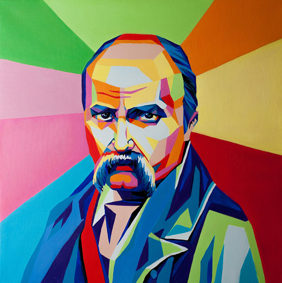

| Name |
Taras Sheva |
| Login |
@TA_RA_SS |
| Registration |
2014/05/13 |
BIO
Taras Shevchenko was born on February 25 (March 9, in a new style) in 1814 in the village Morinets Zvenigorod district of Kiev province. Ukrainian poet, writer (playwright, prose), artist (painter, engraver), enormous and political dіyach. National hero and symbol of Ukraine.